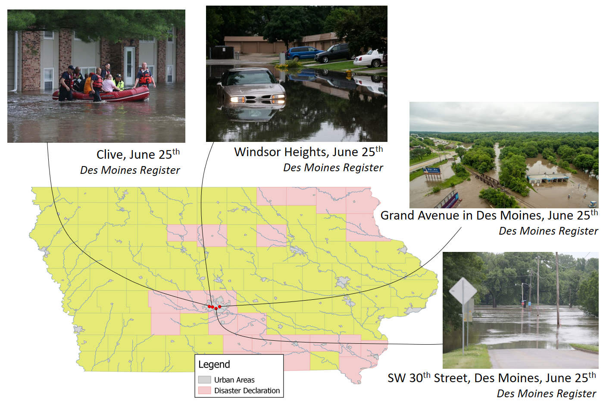

2008
Jun
2010
Jul
2010
Aug
2011
Jun
2013
May
2014
Jun
2015
Jun
2016
Sep
Flood Cathalog
Major Floods in Iowa since 2008
Overview:
New flow records regisered in the Cedar Basin;
About 8,000 evacuated their homes and 5,500 got without electricity in Cedar Rapids;
Des Moines called for voluntary evacuation;
Amtrak (train) temporary stopped activities in Iowa;
Severe damaged the Voxman Music Building;
Damages estimated in U$6 billion;
Triggered the foundation of the IFC.
Sources:
National Weather Service
Des Moines Register
,
The New York Times
,
The University of Iowa Records
FEMA
Overview:
Record floods on Maquoketa River;
Failure of the Lake Delhi Dam;
Town of Hopkinton evacuated;
About 500 homes damaged;
Damages estimated in U$50 million.
Sources:
The Courier
NBC News
The New York Times
The San Diego Union/Tribune
Overview:
Record floods on Skunk River;
Partial evacuation of cities of Colfax and Des Moines near Four Mile Creek;
Temporary shutdown of water in Ames;
8 buildings damaged in the Iowa State University;
Damages estimated in U$65 million.
Sources:
NBC News
Iowa State Daily
FEMA [
1
] [
2
]
National Weather Service
Overview:
Major activities on Missouri and Big Sioux River, affecting west Iowa border;
Roads closed and sandbags needed in Sioux City;
Missouri River levee fails near Hamburg-IA on June 13
th
.
Around 26 bridges closed in Cherokee county, 14 severely damaged;
Damages estimated on U$18 million.
Sources:
Reuters
Sioux City Journal [
1
] [
2
]
NASA - Earth Observatory
Overview:
Several roads closed on minor and moderate, wide spread floods;
Around 7 miles of protectives barriers put up at the University of Iowa;
10
th
highest river elevation registered on Cedar River at Cedar Rapids;
Damages estimated in U$5 million.
Sources:
The Gazette
kitv.com
USA Today
Iowa Public Radio
Overview:
Severe weather that included strong winds and heavy rain;
Iowa Highways 1, 64 and 175 temporarily closed due to floods;
Around 150 houses had major flood damages;
Flood damages estimated on U$11 million only for public facilities.
Sources:
Sioux City Journal
Fox News
Des Moines Register
Press-Citizen

Overview:
Several roads closed, including Highway 28, Highway 169;
Damages estimated on U$3 million on Guthrie County.
Sources:
Des Moines Register [
1
] [
2
]
Raccon Valley Radio
Overview:
Record high crest observed in Osage and Shell Rock;
Around 5,000 homes in Cedar Rapids asked to evacuate;
About 500 homes/business buildings affected, 103 assessed as destroyed;
Damages estimated in U$22 million.
Sources:
USA Today
Fox News
The Gazette